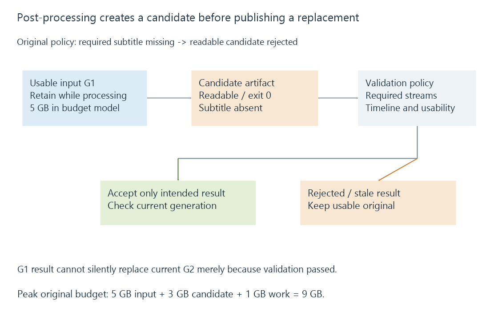

Recording post-processing and verified replacement
Recording post-processing transforms or reorganizes captured media after acquisition, requiring output validation and a consistent publication step before replacing the usable original.
Post-processing can change a recording’s container, encoding, programme boundaries or location after capture. Those operations have different effects on the media and on the files that other parts of the server can use.
Emby provides an optional recording post-processing hook. A hook launches configured work; it does not establish that the resulting artifact is complete, correctly identified or suitable for every client.
Choose what is actually being changed
| Operation | Media consequence |
|---|---|
| Remux | Repackage selected compressed streams without decoding and re-encoding them |
| Transcode | Decode and encode the selected media, potentially changing its representation |
| Cut/edit | Change the retained timeline, subject to the chosen edit method |
| Move | Change location; container and elementary media can remain unchanged |
Stream selection matters even in a remux. Keeping only video and one audio track can omit wanted subtitles or another language without performing a lossy video encode.
A precise cut can also require more work than copying whole compressed packets. Decodable entry points and dependencies determine whether the requested boundary can be retained without re-encoding.
Container seeking supplies that navigation context.
A precise cut has a dependency boundary
Use an original simplified video model with independent entry pictures at zero, four and eight seconds. The desired clip begins at second three and ends at seven.
Starting copied video at four omits the first wanted second. Retaining the independent picture at zero and all of its following dependency chain also retains three seconds before the wanted beginning.
The requested cut lies between independent entry points. A decoder can begin at the preceding entry, reconstruct the intervening pictures and discard presentation before second three; producing a new independently decodable start then requires an appropriate encoding/edit strategy.
This exercise assumes those declared dependency points and omits reordering. It does not identify the actual nearest safe cut in an unspecified codec stream.
Audio adds another boundary. A packet spanning the wanted cut can contain samples on both sides. Selecting whole packets and selecting exact samples are different operations; timestamp normalization must keep the chosen audio and video aligned.
A container change alone does not redefine those dependencies. The output requirements need to state whether extra lead-in, a shifted cut or re-encoding is acceptable before a successful process can be judged.
Process success is one observation
Here is an original validation exercise:
{
"processExitCode": 0,
"inputStreams": ["video", "audio-en", "audio-de", "subtitle"],
"requiredStreams": ["video", "audio-en", "subtitle"],
"outputStreams": ["video", "audio-en"],
"outputReadable": true,
"timelineCheckPassed": true
}
The process reports success, and the output is readable. The required subtitle is absent, so this declared replacement policy rejects it.
The check needs the intended output, not an assumption that every input stream must always be copied. If the user deliberately wanted only video and English audio, the requirements would be different.

Other meaningful checks can include usable duration/coverage, expected codecs, language/default flags and seeking. A larger file or a zero exit status does not substitute for those properties.
Keep a usable artifact while building the candidate
Overwriting the original pathname while producing output exposes a partial file to readers and leaves fewer recovery options if the job fails.
A separate candidate allows the existing artifact to remain available while the replacement is created and checked. Publishing the accepted candidate is then its own operation, coordinated with library metadata and active readers.
The storage path determines the available publication guarantees. Microsoft documents that a cross-volume move behaves as a copy followed by source deletion; it is not one instantaneous same-volume pathname change. Copy-and-delete replacement can expose partial destinations if interrupted.
Likewise, flushing application buffers, completing a container and durable storage are separate conditions. A publication design must use the guarantees of its actual filesystem and write path.
A retry needs the intended input generation
Suppose job J1 transforms generation G1 of a recording. Before it publishes, another operation replaces the current artifact with G2.
J1’s late result should not silently overwrite G2 merely because both use the same display title or final pathname. The job needs to compare the input generation it processed with the artifact it is now replacing.
An original decision fixture makes that check explicit:
{
"jobInputGeneration": "G1",
"currentGeneration": "G2",
"candidateValidated": true,
"publishAllowed": false
}
Validation passed for J1’s candidate, but its input is stale for this replacement.
A retry with an unchanged job identity and input generation can also detect an already-published result rather than creating another independently named copy. The exact job/catalogue mechanism belongs to the implementation.
Temporary storage can exceed the final saving
Use a separate original budget: an input of 5 GB, a candidate of 3 GB and 1 GB of working files.
While all three coexist, they occupy nine decimal GB. Even though the final candidate is two GB smaller than the input, the job needs four GB beyond the original during this modeled peak.
If the candidate fails validation, retaining the original avoids turning a formatting problem into missing content. Recording retention should account for the owners and publication state before reclaiming either artifact.
See Also
- Digital video recording: from live source to stored media
- Recording retention and storage ownership
- Direct Stream in Emby
- Container Indexes and Seeking